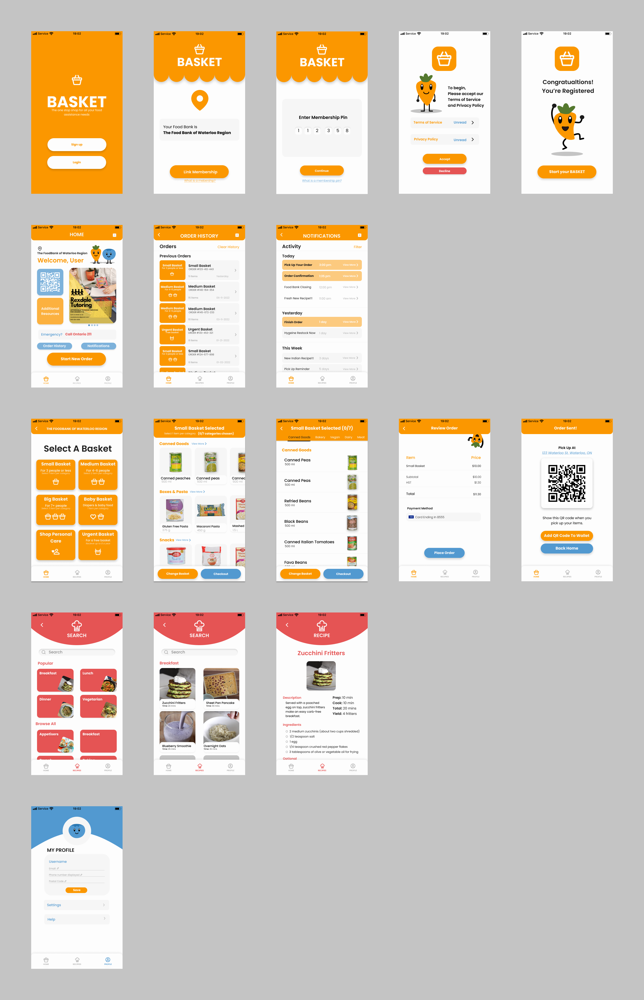

Context
This was a Student project prompted by the United Nations 10th sustainable development goal: to reduce inequalities. Given the Impact that the COVID-19 pandemic had on food security in Ontario, including food shortages and increased prices, our team sought to focus on how we could improve accesibility to food resources through a digital medium. This meant understanding audience needs and how we could align them with local community organizations capabilities while improving awareness and access to resources.
The Challenge
The problem our team aimed to tackle was three-fold. The first is to be an organization driven in pursuit of one of the United Nations Sustainable Development Goals (SDG). The team's current focus is SDG 10: Reduced Inequalities. This SDG calls for reducing inequalities in a variety of faculties. The second piece is the inequality in particular targeted; food insecurity in the Tri-city area: Waterloo, Kitchener, and Cambridge. While researching food insecurity, the team quickly realized its gargantuan nature and decided to narrow its focus to a smaller region. The centre of the tri-cities food assistance programs is an initiative called The Community Food Assistance Network; a system that organizes 100+ community programs and agency partners to provide food and other vital supports to those who need it. Approximately 18% of the community population accessed some faculty of the network, having distributed 4.7 million pounds of food. Finally, while it is clearly an issue for a significant portion of the population, there is still a disconnect between families facing the inequality of food insecurity, yet not receiving help due to personal and accessibility barriers.
Solution Overview
When researching barriers to food assistance accessibility, one of the most significant barriers is accessing information, accounting for 47% of eligible recipients who need and should use food banks not utilizing the service. This is the main rationale for the creation our service, Basket. Furthermore, potential food bank users find themsleves obstructed by a lack of agency for food assistance programs. By providing features that enable greater individual agency (i.e., request features and contact forms) the Basket aims to in tandem affect the additional barrier surrounding personal choice. Additionally, while demographics amongst food assistance recipients are varied, one common element found was access to a mobile smartphone and public internet connection. Understanding that this is one of the few tools affording this inequality afflicted demographic, the decision to make an app was pushed as an effective channel to push the tool. So, the solution we developed is a digital platform available on mobile devices that provides users with information about to their local food bank. This will allow users to circumvent some of the existing barriers to both increase efficacy and access to existing services allowing for a wider range of individuals to be better assisted. Additionally, The information and data tracked through the application help food banks understand which products and services are needed the most and take the necessary steps to adhere to the demands and needs of the food bank users. Lastly, we found that many of our target users require more than simply food bank services and because of this we embedded access to information about additional resources available in the local community related to food insecurity.
Project Canvas
To ensure that understood our challenge and had a strong plan to tackle it we created a project canvas to outline all the components surrounding our project, which can be seen below.

Building Empathy
Our Users
Food bank and assistance program recipients will be Basket’s initial market segment. In Canada, food bank visits in 2021 experienced a 20.3% rise in visits compared to the two previous years. Visits totaled 1,303,997 people, with approximately 1/3 residing in Ontario. Food bank user statistics in Canada at a glance encompass 33.3% of children (while representing only 19.1% of the population), 46.1% are single adult households, and 50.5% are on social assistance or disability-related supports (Hunger Count 2021 Report). Specific to the Waterloo region, more than 33,000 people accessed some kind of food assistance in 2021 (CBC News, 2021). 51% of individuals receiving food assistance are single, followed by single-parent families (19%), two-parent families (17%), couples with no children (6%) and others (7%). 4% of individuals who access food banks are seniors, with 11% of them accessing emergency food hampers 12+ times a year. One common factor is the majority of individuals receiving these services are repeat customers, with a Waterloo Region food assistance impact report listing over 50% having 3-8+ program visits. With carful analysis of our secondary research as well as information gathered from interviewing community stakeholders we narrowed our target market to individuals in the KWC region who are in search of food assistance regardless of gender or age, but with an understanding of two major segments expressed through the persona's below.
Persona's

.png)
Building a Brand
With an initial understanding of our users we wanted to build a brand identity be able to effectively communicate our vision to our users. Below is an outline of our branding guide.


Our brand guide can be viewd in full here
Understanding User Flows
Next we wanted to create a diagram of user flows to ensure that all the components users needed were available and easy to access. We created flows for the out of box experience (OOBE) that users would have as well as for all runtime events and tested these with users to improve them before our vidsual design process began. Below you can see our OOBE user flow.

You can access our full User Flow on our miro board here.
Design
With our user flows complete we began our design process in three major steps, building lo-fidelity mockups, then hi-fidelity mockups and finally a prototype, testing each iteration to remove bugs and make the app more access` ible.
Lo-fi Wireframes
Below is a few of the main screens from our lo-fi mockups.

to view our lo-fi mockups in their entirety click here.
Hi-fi Wireframes
Below is a few examples of our hi-fi mockups, created using our design system via Figma.
A full view of our hi-fi mockups is availablehere.
Prototype
Below is our working prototype, created using Figma, which you can click through right and view on this page.
Takeaways
I learned a lot through this project; specifically, honing my personal design style and workflow. I think my most important takeaway from this project is about communication. Throughout the project there were many times when group members were not on the same page about specific decisions to be made and people had different ideas about how a task should be completed. This led to a lot of reworking of designs and an entire rebrand of our business. I can think of many times where a simple check in or a meeting before individually completing a task would have saved time and created a smoother workflow.
One thing I think was quite well done however, was our overall design thinking process. We had specific and narrow challenge definition with strong user profiles, that were reworked through testing, which focussed on user issues related to our challenge. We had three complete hi-fidelity iterations of our project culminating with our final design. Lastly, although we had setbacks and corrections to make while building our designs, we had a strong design system and workflow as a team to make those corrections efficiently. All together I am most proud of our design process above all else in this project.
Personally, I think my greatest weakness as part of this team was communication. I could have been more vocal about my thoughts and given more frequent and clear updates on my work progress. However, I feel I compensated this with my flexibility. I took on tasks originally not assigned abd was able to manage time well to ensure all deliverables were complete on time, regardless of setbacks.